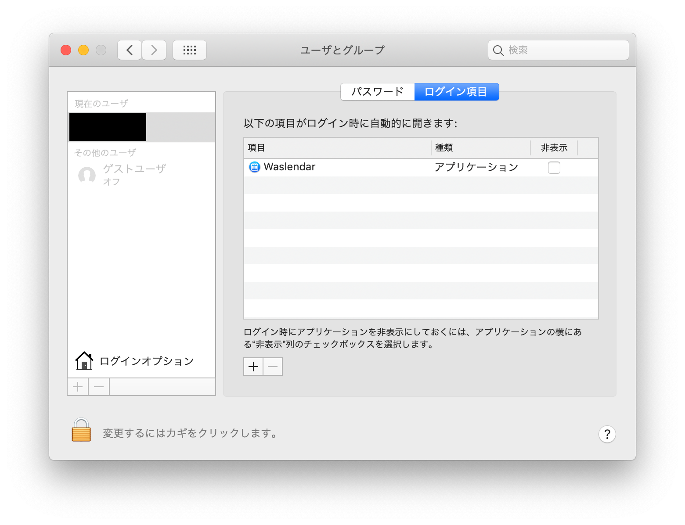

Waslendar
カレンダーを素早くチェック
Contents
画面右上のメニューバーにカレンダーのアイコンが表示され、Mac標準カレンダーの予定を簡単に確認できます。
アイコンを押すだけでスケジュールを確認することができるので、ビデオ会議中に突然「明日の15時から空いてる？」と言われても困ることはありません。
メニューバーに表示する内容は、アイコン、「次の予定まであと何分」、「時計」など色々選べます。
また、日本語・英語に対応しています。

Download
最新版 v1.1.0
- Waslendarからカレンダーに予定を追加できるようになりました。
- Tキーで今日の予定を表示、Rキーでリロードできるようになりました。
旧OSでは動作が安定しなかったため、予定追加機能はmacOS 10.15 Catalina以上でのみ使用できます。
過去のバージョン（クリックして表示）
v1.0.3
macOS 11.0 Big Sur (Developer Beta)で不具合のあった部分を修正しました。
macOS Xでの動作も確認しています。
- 英語設定の時の不具合を修正
- 一部のボタンのサイズを変更
v1.0.2 (認証済み)
起動時の警告が表示されないようになりました。
- Appleの公証に通過
v1.0.2
- ウィンドウのサイズを3段階で調整可能に
- 次の予定が表示されない不具合を修正
v1.0.1
- 次の予定がメニューバーに表示されない不具合を修正
Initial Releases
v1.0.0
使い方
メニューバーに表示されているアイコン（）をクリックすると、Mac標準のカレンダーに登録されている予定を見ることができます。
ダウンロード方法
このページの上の方にあるダウンロードボタンを押してください。
言語の変更
ver.1.1.0以降では、自動でデフォルトの言語が設定されます。
変更する場合は、カレンダー画面右下の設定ボタン（）で設定を開き、言語（Language）から設定できます。
ログイン時に起動するようにする
PCを再起動した時にWaslendarが自動で起動するようにします。
現在、アプリ内の設定から設定する機能はないため、Macの設定アプリから行います。
「システム環境設定」アプリから「ユーザとグループ」を開き、「ログイン項目」で＋ボタンを押してWaslendarを追加してください。

時計表示にする
この画像のように時計風の表示にすることもできます。
表記は、メニューバーにもともとある時計を元にしています。
追加予定の機能
今後のアップデートで追加予定の機能です。
- ログイン時に起動できるようにする
開発環境
| 言語 | Swift5 |
| エディタ | Xcode 11 |
| OS | macOS 10.14 |
Comments
Show Comments